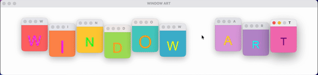

window-art：当窗口框架成为画布的余项
window-art: When the Window Frame Becomes the Canvas's Remainder

每一个创意编码框架——Processing、p5.js、openFrameworks、TouchDesigner——都有一个共同的隐含前提：你在窗口内部作画。画布是你的领地，窗口框架是操作系统赋予你的透明容器。标题栏、边框、最小化按钮——这些是已构（construct）的基础设施，是显示管理系统经过几十年标准化之后沉淀下来的惯例。没有人对它们施以凿刀，因为它们已经隐形了。
willmeyers 在 2026 年 3 月发布的 window-art 做了一件精确的凿构操作：他把画布整个移除了。在 window-art 中，你不在窗口内部画任何东西。你创建窗口、移动窗口、调整窗口大小、改变窗口颜色、让窗口渐隐渐现——窗口本身就是图元。操作系统的窗口管理器，那个原本应该是透明容器的东西，变成了创作的媒介。这是一个极其精确的余项暴露：当画布被凿掉之后，窗口框架——显示管理范式的结构残余——浮现为可操作的美学对象。
从凿构循环（chisel-construct cycle）的角度看，这里发生了双层余项。第一层：整个创意编码传统将"在窗口内绘图"视为已构，window-art 凿掉这个已构，暴露出窗口本身作为余项。第二层更微妙：桌面窗口范式本身正在消亡。手机没有窗口，平板没有窗口，全屏 WebGL 应用没有窗口。桌面窗口管理器是一种正在被遗忘的交互模式的残余——window-art 恰好在窗口走向废弃的时刻，将它捕获为创作素材。这是对即将消失之物的余项考古学。
Hacker News 上的评论者一语中的："令我惊讶的是，连 demoscene 都没有真正做过这种事。"Demoscene 会在 4096 字节内压缩整个宇宙，会在没有 GPU 驱动的设备上重建视觉合成器，但它从未质疑过窗口本身。窗口框架是 demoscene 的盲区——不是因为它不重要，而是因为它太基础了，基础到成为不可见的已构。JODI 在 1990 年代曾用破坏性方式搅乱桌面，但那是解构，不是建构。window-art 将窗口框架驯化为可组合、可动画、可实时编码的乐器——它把 JODI 的暴力变成了一种温和的形式语言。
这个项目只有 71 颗 GitHub 星，一个 v0.1.1 的发布，纯 Python 实现，MIT 协议。它不属于创意编码（它不在画布上画画），不属于 demoscene（它不追求极限压缩），不属于网络艺术（它运行在本地桌面），也不属于互动装置（它不需要硬件）。它在这些命名之间的缝隙中生长。艺术界暂时看不到它，但它的逻辑——将基础设施的残余变成美学对象——正是余项之美的核心操作。现在看到它比以后看到它更重要，因为现在它还是余项；一旦被命名、被归类，它就会变成某种新的已构，而余项将再次逃逸。
github.com/willmeyers/window-art ↗Every creative coding framework — Processing, p5.js, openFrameworks, TouchDesigner — shares one implicit premise: you draw inside a window. The canvas is your territory; the window frame is the transparent container the operating system grants you. Title bars, borders, minimize buttons — these are the construct of the display management system, conventions sedimented over decades of standardization. Nobody takes a chisel to them, because they have already become invisible.
willmeyers' window-art, released in March 2026, performs a precise chisel-construct operation: it removes the canvas entirely. In window-art, you draw nothing inside a window. You create windows, move them, resize them, recolor them, fade them in and out — the window itself is the primitive. The operating system's window manager, the thing that was supposed to be a transparent container, becomes the medium. This is an exact remainder exposure: once the canvas is chiseled away, the window frame — the structural residue of the display management paradigm — surfaces as a manipulable aesthetic object.
Viewed through the chisel-construct cycle, a double remainder operates here. First layer: the entire creative coding tradition treats "drawing inside a window" as construct. window-art chisels that construct away, exposing the window itself as remainder. Second layer, subtler: the desktop windowing paradigm is dying. Phones have no windows. Tablets have no windows. Fullscreen WebGL apps have no windows. The desktop window manager is the residue of an interaction model being forgotten — and window-art captures it as creative material at the exact moment of its obsolescence. This is a remainder archaeology of the soon-to-vanish.
A commenter on Hacker News put it precisely: "I'm actually surprised that I haven't really seen this kind of thing in demoscene." The demoscene will compress an entire universe into 4,096 bytes, will rebuild a visual synthesizer on a device with no GPU driver, but it has never questioned the window itself. The window frame is the demoscene's blind spot — not because it's unimportant, but because it's so fundamental that it has become invisible construct. JODI disrupted the desktop destructively in the 1990s, but that was deconstruction, not composition. window-art domesticates the window frame into a composable, animatable, live-codable instrument — it turns JODI's violence into a gentle formal language.
The project has 71 GitHub stars, a single v0.1.1 release, pure Python, MIT license. It doesn't belong to creative coding (it doesn't draw on a canvas), doesn't belong to the demoscene (it doesn't pursue extreme compression), doesn't belong to net art (it runs on the local desktop), and doesn't belong to interactive installation (it needs no hardware). It grows in the gap between these names. The art world can't see it yet, but its logic — turning infrastructure's residue into aesthetic object — is the core operation of the beauty of the remainder. Seeing it now matters more than seeing it later, because right now it's still remainder; once named and categorized, it will become some new construct, and the remainder will escape again.
github.com/willmeyers/window-art ↗